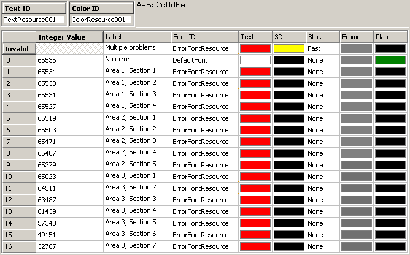
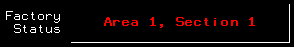
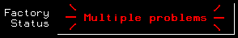

|
|
|
|
|
|
|
|
The following steps describe how to create a Message Display that displays an error message when there is a problem with the equipment in a factory.
One of the factory's manufacturing lines is configured with various sensors to ensure the safe and efficient operation of equipment. These sensors are attached to a Modbus PLC, with each sensor associated with one of the bits in a 16-bit word address (40101). The 16-bit word address is mapped to a Vijeo-Designer variable.
When all the bits are ON, then the manufacturing line is operating normally. When any of the bits in the word address turns OFF, there is an error in the system and the corresponding message appears in the message display.
Set up the communication by adding the Modbus driver and configure the external variable as follows.

For information about adding drivers, see Section 5.2, Setting Up Your Equipment. For information on the variable settings, see Section 6.2.3, Variable Properties.
Click the Message Display icon from the Graphical Objects Parts toolbar.
On the panel, click the start and end of the area where you want the Message Display, and the Message Display Settings dialog box will appear.

For descriptions about the properties in the Message Display Settings dialog box, see Sections 14.2.1 General Tab, 14.2.2 Input Mode Tab, 14.2.3 Visibility Tab, 14.2.4 Advanced Tab.
In the States property, define the number of messages you want to display. In this example, we have 17 states, one for each of the 16 sensors and one for the normal condition.
Click the New Resource icon  , confirm the properties in the New Resource dialog box, and then click OK.
, confirm the properties in the New Resource dialog box, and then click OK.
In the Color and Text Resource editors, define the color and labels to complete setting up the message display. The Integer Value is determined by which sensor is OFF, and therefore which bit is OFF in the word address. The message gives the panel operator information about where the error has occurred.
You can also insert dynamic content to your message display by creating text resources with a time stamp and variable in the Label column. For more information, see Section 21.1.5.12, Setting Up Messages with Dynamic Content.


For information on how to work with Color and Text Resource editors, see Section 21.1.5, Working with Resources.
State 0 is when all the sensors are ON, and the variable value is 65535. There are no errors as the factory line is operating properly.
There are 16 other defined states. Each of these states are error conditions that indicate when a single sensor is OFF.
State 1 is when bit 1 in the word address is OFF, and the variable value is 65534.

State 16 is when bit 16 is OFF, and the variable value is 32767.
The Invalid state is when multiple sensors are OFF. The Invalid state displays a blinking message.
